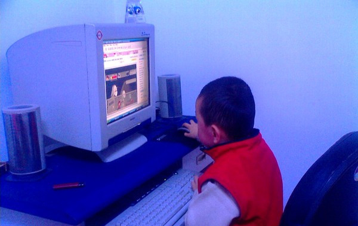
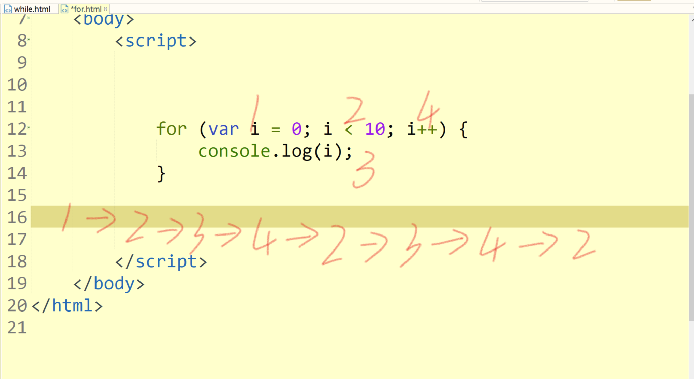
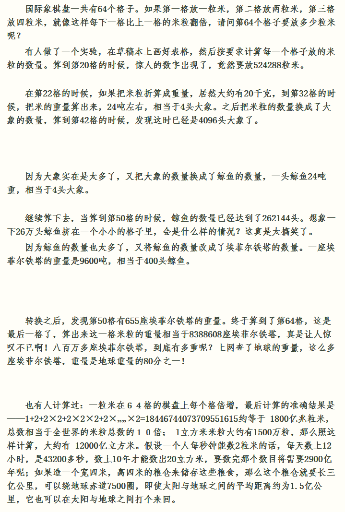

计算机真的智能吗？

计算机其实很笨！所谓的智能都是人工赋予的
讲个故事：
很久很久以前，有一个熊哥
一天，他家的水龙头坏了
可是熊老师很好强，不愿找他人协助，所以自己买了新的水龙头回来换
那么，问题来了，怎么换呢？
首先需要把坏掉的水龙头拧下来
需要拧多少下？
只要水龙头没掉下来就一下一下的拧，直达掉下来为止
然后，再把新的水龙头拧上去
需要拧多少下？
只要水龙头没拧紧就一下一下的拧，直到拧紧了为止
一下一下拧水龙头就是重复的操作，重复的操作就是循环！
document.write("Hello world");
document.write("Hello world");
... 写十遍
var str = "Hello world";
document.write(str);
document.write(str);
...
仍然要写10遍
while循环
while(条件){
//条件成立就会反复执行这里的代码
}
var count = 0;
while(count < 10){
count++;
document.write("Hello world");
}
死循环： 没有终止条件的循环即为死循环，在代码中应尽量避免死循环
do...while循环
do{
//先执行一遍代码
//while条件成立再继续反复执行
}while(条件)
while和do...while循环的区别
do...while循环至少会执行一遍，不管条件是否成立，但是while循环如果初始条件不成立一遍也不会执行
> 打印100以内的所有奇数
> 打印一个数的所有因数
break和continue关键字
break：跳出循环体，整个循环结束
continue：结束本次循环进入下一次循环体
- 入职薪水10K，每年涨幅5%，50年后工资多少？
- 逢7过游戏，打印1-100，遇到能被7整除或者带7的数字打印“过”代替
- 一张纸的厚度是0.0001米，将纸对折，对折多少次厚度超过珠峰高度8848米（27次）
for循环
for (var i = 0; i < 10; i++) {
console.log(i);
}

for循环1，2，4步是可选的
三种循环的联系和区别
1、都是会反复执行的代码块
2、大部分情况下可以互相替换
3、do...while至少执行一次，while和for有可能0次，while不太能确定执行次数，for可以
练习（while和for两种方式）
- 打印100以内所有偶数的和
- 求出1-1/2+1/3-1/4…..1/100的和
- 打印出1000-2000年中所有的闰年，并以每行四个数的形式输出
- 打印三角形

- 输出100-200之间所有的素数（只能被1和自己整除的数）
for循环的嵌套 ： 可以简单的理解为行和列的关系（外层for循环控制行，内层循环控制列）
断点的使用，单步调试
- 打印100–200之间所有能被3或者7整除的数
- 计算100的阶乘
- 求100-999之间的水仙花数。abc =
 +
+ +
+
- 打印九九乘法表
- 求1+2!+3!+...+20!的值
- 打印星星

完成一个三角形打印功能
完成一个梯形打印功能
有一个棋盘，有64个方格，在第一个方格里面放1粒芝麻重量是0.00001kg，第二个里面放2粒，第三个里面放4，按每一个格子是前一个格子的二倍（第四个格子放8个）计算，问棋盘上放的所有芝麻的重量是多少
| 这是一个很著名的故事：阿基米德与国王下棋，国王输了，国王问阿基米德要什么奖赏？阿基米德对国王说：“我只要在棋盘上第一格放一粒米，第二格放二粒，第三格放四粒，第四格放八粒…按这个方法放满整个棋盘就行．”国王以为要不了多少粮食，就随口答应了，结果国王把国库粮仓所有的粮食都拿出来也放不够棋盘，只能认输了． |
